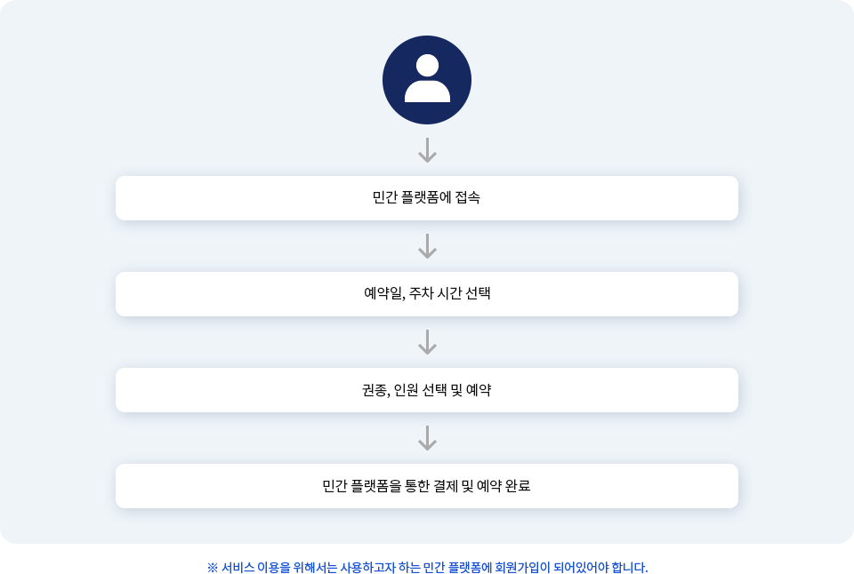

삶을 가치 있고 이롭게 하는 숲
모두가 누리는 아름다운 숲
국립수목원 예약
삶을 가치 있고 이롭게 하는 숲모두가 누리는 아름다운 숲
국립수목원은 행정구역으로는 경기도 포천시 소흘읍 직동리, 지리적으로는 중앙에는 소리봉(해발 536.8m), 남단에는 천점산(해발 392m), 서쪽에는 용암산(해발 479.6m)이 주봉으로 광릉숲의 한가운데 동향으로 자리 잡고 있습니다. 총 102ha의 면적에 3,873종류의 식물을 식재하여 일반 방문객은 물론 식물전공 학생과 전문가들에게 현장학습 장소로 활용되고 있습니다.
국립수목원이 위치한 광릉숲에는 총 6,296종의 생물이 살고 있으며, 그중 천연기념물이 20종, 산림청 희귀식물 및 특별산림보호대상종이 31종(각 23종, 8종) 존재하고 있습니다.
국립수목원의 전문전시원에는 관상 가치가 높은 나무를 모아 배치한 관상수원, 꽃이 아름다운 나무를 모아 전시한 화목원, 습지에 생육하는 식물을 모아놓은 습지 식물원 이외에도 수생식물원, 식 · 약용식물원, 희귀 · 특산 식물 보존원, 소리 정원, 덩굴 식물원, 손으로 보는 식물원, 난대 식물 온실 등이 있어 다양한 볼거리 및 교육 거리를 제공합니다.
국립수목원이 위치해있는 광릉숲은 국내에서 4번째로 선정된 유네스코 생물권보전지역으로, 수도권 지역이라는 점에서 의미가 큽니다.
-
수목원 예약
국민들이 일상적으로 이용하는
앱을 통해 빠르고
간편하게
국립수목원 이용 예약이 가능합니다. -
주차장 예약
방문 전에 주차장 사용을 예약하여
주차장을 이용할 수 있습니다. -
주차 차량 번호 변경
주차장을 이용하고자 하는
차량 번호를 변경할 수 있습니다.
사용자 서비스 이용 프로세스
민간 채널을 통해 국립수목원 예약 서비스를 이용하는 사용자들은 다음과 같은 과정을 거치게 됩니다. 서비스를 이용하기 위해 개별적인 앱/웹을 설치해야 했던 기존의 방법에서 벗어나, 평소 친숙하게 사용하던 민간 앱을 이용해 프로세스를 시작하고 마무리할 수 있습니다.
